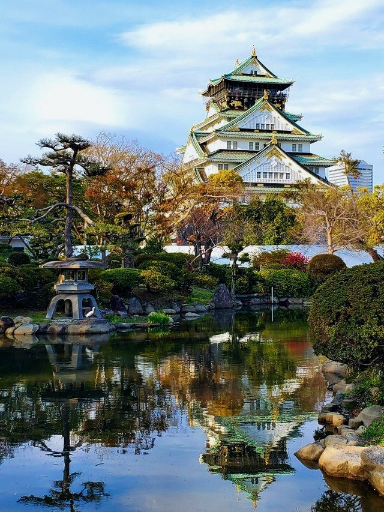
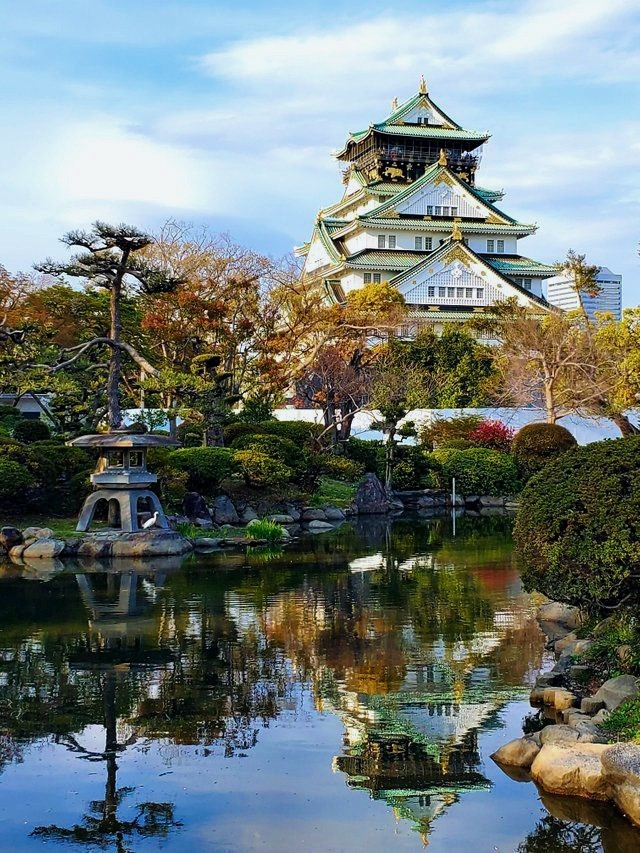

Замъкът Осака
И най-дългото пътуване започва с една малка стъпка...
Лао Дзъ


Осака е третият по големина град в Япония. Градът се намира на остров Хоншу на мястото, където река Осака се влива в залива Джодо. Най-интересната забележителност на града безспорно е Замъкът Осака (Osaka Castle), който е построен през 1576 година. Той има пететажната Главна кула, която днес впечатлява с възстановената си по образеца си от миналото архитектура, в която могат да се видят многобройни произведения на изкуството. Цялата главна кула на замъка Осака е оградена от помощни крепости, порти, кули, внушителни каменни стени и ровове. Замъкът Осака е бил строен с цел да бъде най-здравият и най-красивият в Япония. Над 30 000 души са се трудили неуморно ден и нощ за издигането на красивия дворец. Замъкът Осака е издигнат на мястото на по-стария храм Хонганджи (Honganji Temple), който е разрушен от Oda Nobunaga 30 години по рано от началото на новия замък. Предвиждало се той да стане център на нова и унифицирана Япония под управлението на владетеля Тойотоми (Toyotomi Hideyoshi). Все пак този план не се осъществил докрай, защото през 1615 година, няколко години след смъртта на Тойотоми замъкът Осака е тотално унищожен от войските на Токугава (Tokugawa).
Замъкът Осака е напълно възстановен през 1620 година, но 45 години по късно неговата главна кула е поразена от мълния и тотално унищожена. Кулата е възстановена в оригиналния си вид едва през 1931 година. Цяло чудо е, че по време на войната нито една част от двореца не е засегната от честите бомбардировки и въздушни нападения. От 1995 до 1997 е направена последната реставрация на замъка. В този му вид го виждаме и днес. Освеженият вид на замъка, при който е запазен първоначалният му вид привлича интереса на множество туристи. В сградата дори има построен асансьор, за по-голямо удобство. Тук може да се разгледа и исторически музей на Toyotomi Hideyoshi. Целият комплекс се разпростира на 60 000 кв. м площ, на които са изградени общо 13 постройки.
Често в замъка се провеждат различни традиционни за Япония фестивали. Най-голяма активност има през април, когато се наблюдава цъфтежа на черешовите дървета. Градината на замъка съдържа 600 черешови дървета.
“През пролетта, когато черешовите цветове цъфтят на всеки ъгъл, гледката спира дъха.” – споделят хора посетили замъка
Работно време: 9:00 до 17:00 часа
 
